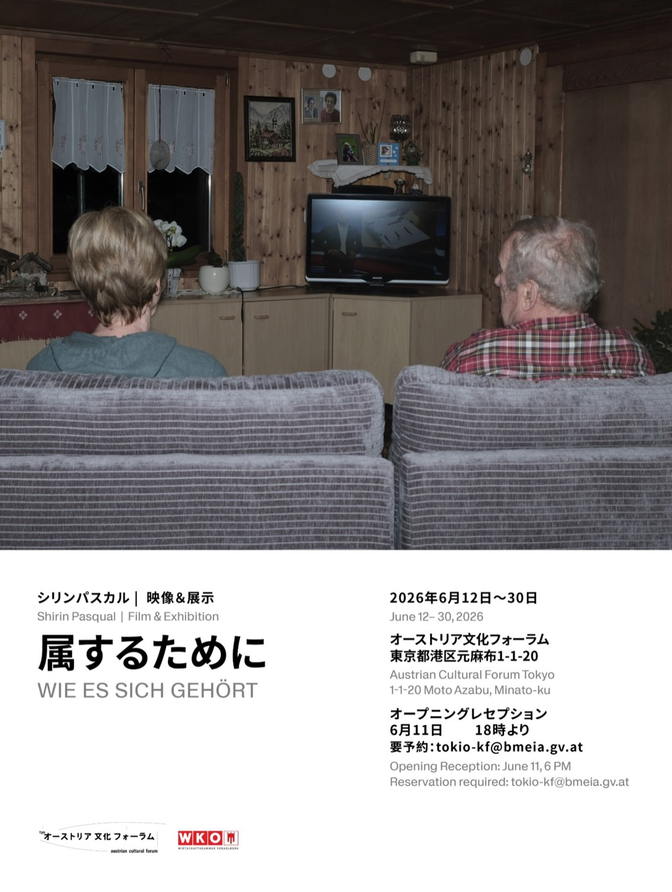

Vorarlberg, Austria. Eight rituals.
Precise, synchronized, unspoken.
Acts repeated so consistently they become indistinguishable from identity itself.
Is belonging something we feel or something we perform?
Wie es sich gehört
Direction & Cinematography – Shirin Pasqual
Wie es sich gehört is a short film observing eight everyday rituals in Vorarlberg, Austria. Approaching familiar traditions from the perspective of someone returning after years abroad, the film looks at the relationship between individual experience and collective customs.
Photographic documentation
Publication
